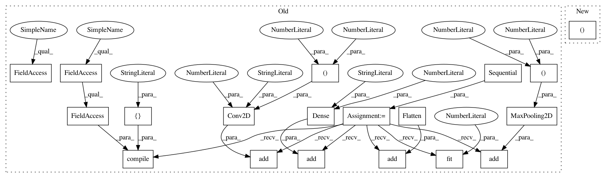

34c9172185fc79e6a971919f910fbbb7e945f5e5,art/classifiers/keras_unittest.py,TestKerasClassifier,setUpClass,#Any#,24
Before Change
im_shape = x_train[0].shape
// Create basic CNN on MNIST; architecture from Keras examples
model = Sequential()
model.add(Conv2D(32, kernel_size=(3, 3), activation="relu", input_shape=im_shape))
model.add(Conv2D(64, (3, 3), activation="relu"))
model.add(MaxPooling2D(pool_size=(2, 2)))
model.add(Flatten())
model.add(Dense(128, activation="relu"))
model.add(Dense(10, activation="softmax"))
model.compile(loss=keras.losses.categorical_crossentropy, optimizer=keras.optimizers.Adadelta(),
metrics=["accuracy"])
model.fit(x_train, y_train, batch_size=BATCH_SIZE, epochs=3)
cls.model_mnist = model
import requests
import tempfile
After Change
cls.mnist = (x_train, y_train), (x_test, y_test)
// Load small Keras model
cls.model_mnist, _ = get_classifier_kr()
cls.functional_model = cls.functional_model()
import requests
In pattern: SUPERPATTERN
Frequency: 3
Non-data size: 19
Instances
Project Name: IBM/adversarial-robustness-toolbox
Commit Name: 34c9172185fc79e6a971919f910fbbb7e945f5e5
Time: 2019-03-08
Author: Maria-Irina.Nicolae@ibm.com
File Name: art/classifiers/keras_unittest.py
Class Name: TestKerasClassifier
Method Name: setUpClass
Project Name: IBM/adversarial-robustness-toolbox
Commit Name: c0e9a520c944e971b0ea53a9e81142e2e6bbab64
Time: 2019-02-13
Author: beat.buesser@ie.ibm.com
File Name: art/attacks/universal_perturbation_unittest.py
Class Name: TestUniversalPerturbation
Method Name: test_krclassifier
Project Name: IBM/adversarial-robustness-toolbox
Commit Name: 65007a1aebc07f13513f3feab3831a14ed72e732
Time: 2019-02-13
Author: beat.buesser@ie.ibm.com
File Name: art/attacks/newtonfool_unittest.py
Class Name: TestNewtonFool
Method Name: test_krclassifier
Project Name: IBM/adversarial-robustness-toolbox
Commit Name: 34c9172185fc79e6a971919f910fbbb7e945f5e5
Time: 2019-03-08
Author: Maria-Irina.Nicolae@ibm.com
File Name: art/classifiers/keras_unittest.py
Class Name: TestKerasClassifier
Method Name: setUpClass